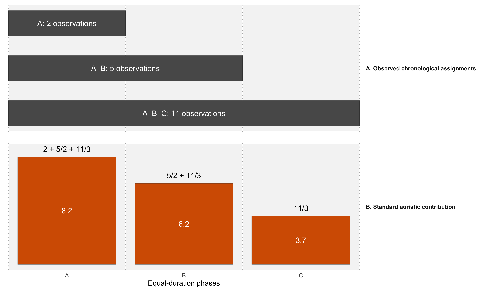
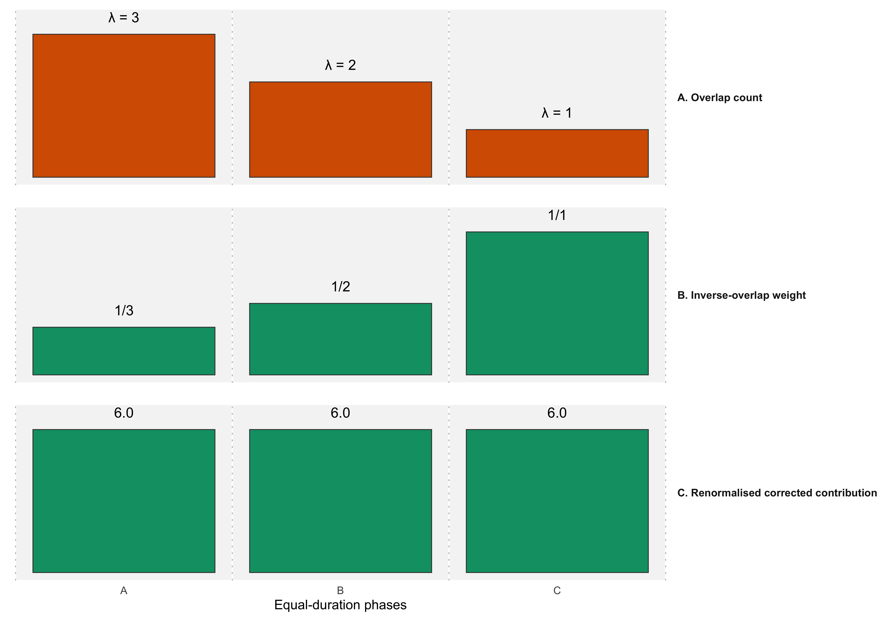
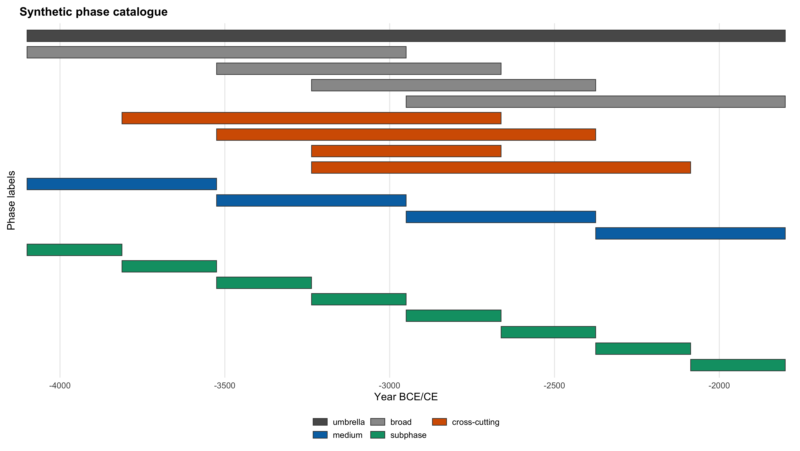
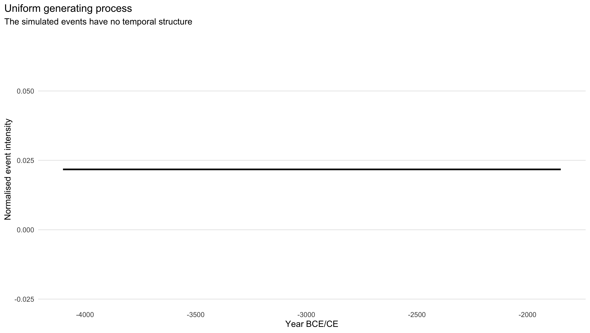
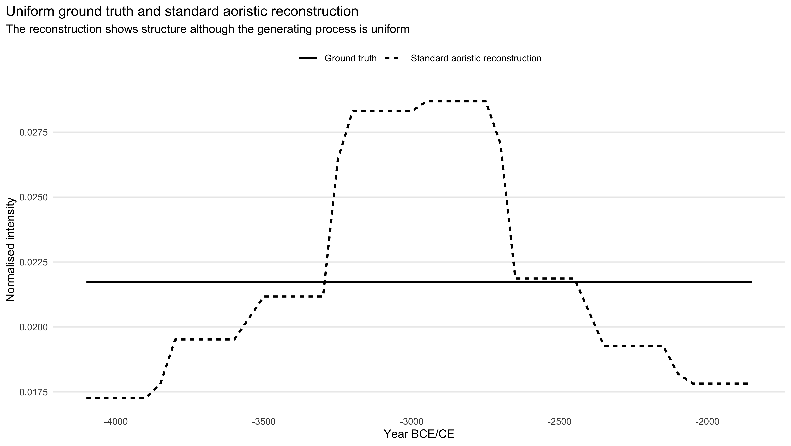
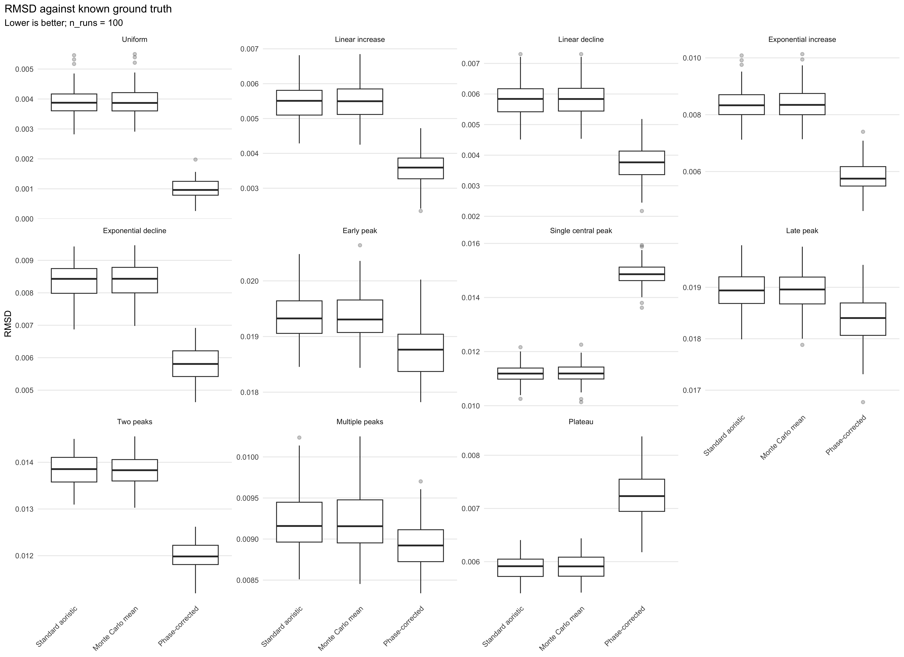
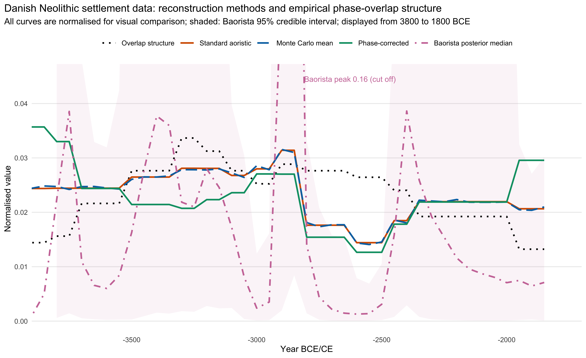

Paper companion website
When chronological classifications create archaeological signals
Aoristic analysis spreads each phase-dated observation evenly over its interval. Where the intervals come from overlapping, hierarchical phase systems, the resulting curves take on the shape of the classification itself. We show why this happens, why more data and more elaborate methods do not remove it, and how it can be corrected.
Martin Hinz · Nils Müller-Scheeßel

Manuscript prepared for submission. The paper will be submitted to the Journal of Archaeological Science. This page summarises the argument and the main results. The manuscript and the supplements are the authoritative sources for methods, numbers and diagnostics.
Overview
A large part of the archaeological record is dated not by radiocarbon but by phases. Sites, graves and finds are assigned to typological or cultural periods of very different length, and regional and national databases now make such data available in large quantities. Aoristic analysis is the standard way of turning them into a temporal frequency curve. It treats each interval as a neutral container of chronological uncertainty.
That assumption fails when the phases overlap. Which label an observation receives depends on its date and on how many labels are available for that date, so the observations are not coarsened at random. The overlap structure of the catalogue then reappears in the reconstruction, and it does not go away with more data.
The mechanism
In simulations with a uniform event process, the standard aoristic curve reproduces the overlap structure of the phase catalogue almost exactly.
Why it persists
Monte Carlo aoristics and a Bayesian reconstruction treat the intervals in the same way and inherit the bias. Its size does not shrink with the sample.
The correction
A phase-corrected weighting, derived from a simple model of label assignment, needs nothing but the intervals and reduces the error by about an order of magnitude.
The checks
Simple diagnostics show whether a reconstruction is affected and whether the assumptions of the correction hold in a given dataset.
The problem
Chronological uncertainty is not always neutral
Archaeological intervals are categories of a classification, not rounded measurements. Some are narrow phases, others broad periods, and many overlap. A broad label collects its observations mainly from those parts of its range that few other labels cover, but the standard method spreads them evenly over the whole range. Weight is thereby shifted towards the parts of the sequence where many labels overlap.

1
Events
The past process may be uniform or follow any other trajectory.
2
Classification
Each event receives one of the narrow or broad labels that cover its date.
3
Reconstruction
Uniform weighting within each interval carries the overlap structure of the catalogue into the curve.
Representing uncertainty is not the same as correcting it. When the system used to express chronological uncertainty has a structure of its own, that structure ends up in the result.
Evidence
A controlled demonstration
The simulations use a synthetic catalogue of broad periods, phases, subphases and cross-cutting labels. Its overlap curve counts the labels covering each year and describes nothing but the geometry of the classification.


Events are drawn from a uniform distribution and each is given one of the labels compatible with its date. The standard aoristic reconstruction of these events is nevertheless structured, and the structure follows the overlap curve.


Comparing reconstruction methods
The paper compares standard proportional aoristics, Monte Carlo aoristics, the phase-corrected weighting and the Bayesian reconstruction implemented in baorista. The Monte Carlo mean converges on the standard sum, and the Bayesian posterior concentrates probability where many labels overlap. The phase correction comes close to the uniform truth, and its remaining error is sampling noise. The error of the standard method stays the same whether 1,000 or 10,000 events are simulated.

Standard aoristics
Transparent and deterministic, but it takes over the overlap structure of the intervals.
Monte Carlo aoristics
Shows the spread of possible curves, but its mean is the standard sum.
Phase correction
Weights each year within an interval by the inverse number of labels covering it.
Bayesian reconstruction
Models the curve explicitly, but its likelihood treats the intervals as neutral bounds and inherits the bias.
Beyond a uniform signal
Ten non-uniform signals, from trends and single or multiple peaks to a plateau, test whether the correction preserves real structure. It performs better than or as well as the standard method for nine of the eleven signals. It dampens a single central peak and a plateau, where the real concentration of events coincides with the region of high overlap. Three further assignment models, with preferences for narrow labels, broad labels or particular levels of the hierarchy, change little about this pattern.


Empirical case studies
Danish Neolithic settlement data
About 3,500 Neolithic settlement records from the Danish national register Fund og Fortidsminder are reconstructed with all methods and compared with a summed probability distribution of radiocarbon dates from XRONOS. The correction largely removes the coupling of the curve to the interval structure. It also moves the curve towards the radiocarbon record, with which the standard reconstruction is essentially uncorrelated, although no reconstruction agrees with the SPD beyond chance. Baorista is less correlated with the overlap curve than the standard reconstruction, but its dominant peak sits right before a boundary shared by many intervals.

The same data also show the limits of the approach. Label use in the Danish register is far more concentrated on a few broad periods than the correction assumes, and the support from the radiocarbon comparison is moderate rather than conclusive. The case therefore illustrates how the key assumption can be checked, and why independent evidence matters where it fails.
Hallstatt-period burials
About 2,200 Early Iron Age graves from southwestern and southern Germany, dated with a fine-grained relative chronology of short phases, offer no independent radiocarbon record because of the Hallstatt plateau. Here the standard reconstruction follows the overlap structure of the catalogue almost step by step, and the correction more than halves the overlap-aligned amplitude. Label use is close to what the correction assumes, so the corrected curve is the better-founded estimate. The Baorista fits all converge here, and Baorista again concentrates probability where most labels overlap.

One deviation survives the correction. In HaD2 all reconstructions fall below the overlap curve, and in HaD3 they rise above it. The catalogue cannot produce this pattern. It more likely reflects the absolute dates assigned to the phases and would fit a HaD2 that was shorter than commonly assumed.
What to do in practice
Look at the catalogue
Harmonise the intervals, plot their overlap curve and check how evenly the labels are used before interpreting peaks and troughs.
Compare both curves
Read the standard and the corrected reconstruction together, along with their coupling to the overlap curve.
Test and triangulate
Test conspicuous features against what the catalogue alone would produce, and use independent evidence where the internal checks leave the question open.
Where standard and corrected reconstructions agree, the interpretation rests on firmer ground. Where they diverge, the diagnostics show whether the difference is likely to come from the catalogue.
Paper and reproducible materials
All analyses are reproducible from the repository, which contains the manuscript source, the data, the analysis scripts and the cached model outputs. The supplements are executable Quarto documents that document each analysis step by step.
Manuscript
Supplements
S2 Comparison of reconstruction methods
Code and data
The phase correction is implemented as period_correction in the R package aoristAAR.
Citation
Suggested citation
Hinz, Martin, and Nils Müller-Scheeßel. Systematic bias from overlapping temporal classifications requires correction in aoristic reconstructions. Manuscript to be submitted to the Journal of Archaeological Science, 2026. Code, data and supplements: Zenodo, doi:… (TODO).
@unpublished{hinz_mueller-scheessel_aoristic_bias,
author = {Hinz, Martin and Müller-Scheeßel, Nils},
title = {Systematic bias from overlapping temporal classifications requires correction in aoristic reconstructions},
year = {2026},
note = {Manuscript to be submitted to the Journal of Archaeological Science},
url = {https://isaakiel.github.io/aoristic_overlap_bias_paper/}
}